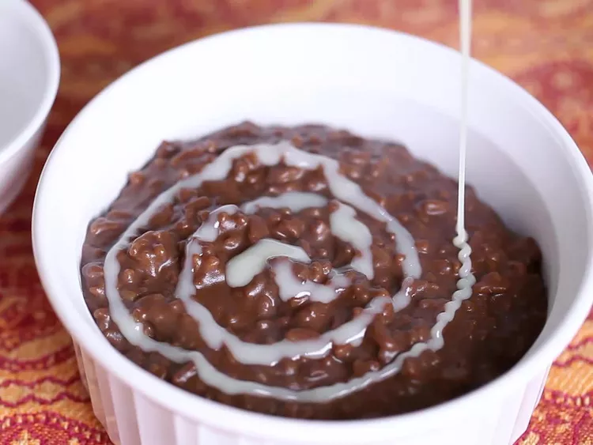

Back to Recipe Page
Champorado Recipe

This Champorado recpie is a hearty sweet rice (malagkit) with chocolate that is great for snacking.
Preparation Time: 5 mins
Cook Time: 25 mins
Total Time: 30 mins
Servings 6
Ingredients
- 1 cup glutinous sweet rice
- 2 cups light coconut milk
- ½ cup cocoa powder
- 1 cup white sugar
- 1 teaspoon salt
- 1 cup thick coconut milk
Steps
-
Combine rice and light coconut milk in a large pot;
bring to a boil for 10 minutes, while stirring
occasionally to keep rice from sticking to the bottom of the pot.
-
Stir cocoa powder, sugar, and salt into rice; reduce heat to low, cover,
and continue cooking, stirring occasionally, until rice is tender, about
10 minutes more.
-
Pour thick coconut milk into rice mixture; stir to combine. Serve hot.